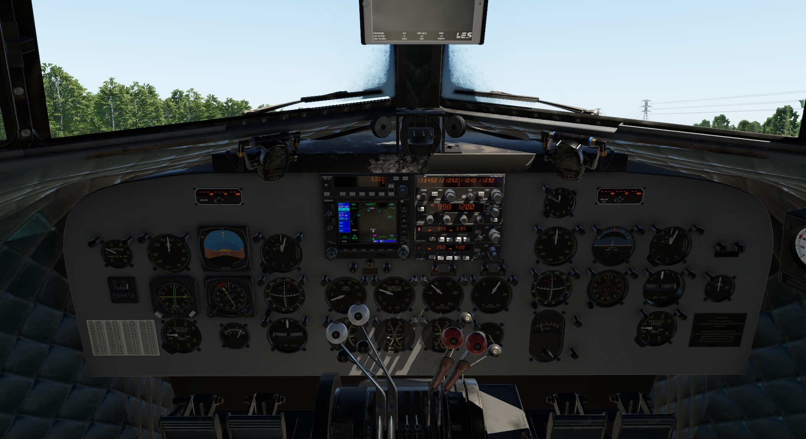

Introduction
This version has an updated, more modern panel, with newer instruments and radios. 
This variation represents updated DC-3 aircraft with newer instruments, and radios/avionics. The panel layout was based, mostly but not fully, on Breitling's DC-3, HB-IRJ.
This variation provides to the pilot a fully IFR capable aircraft, to perform all kinds all instrument procedures. This, though, does not deduct anything from the experience that you are operate a DC-3!
The rest of the systems remain similar to the Classic variant, though they have tuned accordingly to facilitate the new panel.